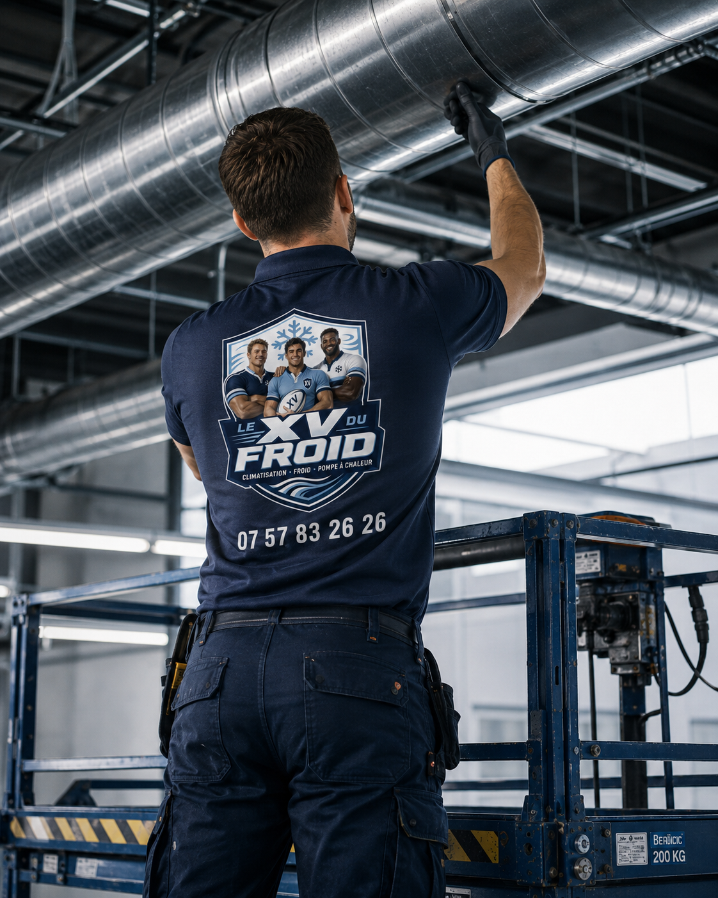

Installation climatisation Versailles · Yvelines (78)
Installation de climatisation à Versailles.
Installateur de climatisation à Versailles pour appartement bourgeois, maison de ville, commerce du centre et bureau. Chaque projet est étudié sur place : façade, cour, copropriété et discrétion de la pose passent avant le choix de l’appareil.
- Étude sur place
- Devis détaillé
- Essais à la mise en service

Versailles · 78000
Versailles : une ville de pierre où la clim doit se faire discrète.
Entre le château, les rues bordées d’immeubles en pierre de taille et les grandes avenues de Notre-Dame et de Saint-Louis, Versailles ne ressemble à aucune autre ville des Yvelines. Installer une climatisation s’y prépare comme une petite opération de restauration : on cherche l’emplacement qui protège le bâti et le voisinage.
- Surface, volume, orientation et isolation
- Emplacement possible du groupe extérieur
- Voisinage, copropriété, accès et condensats
- Essais, réglages et conseils d’utilisation
Installation climatisation Versailles
Des immeubles anciens et des règles de façade à respecter.
Une grande partie du parc versaillais est ancienne : appartements hauts de plafond, étages sous combles, hôtels particuliers divisés en lots, maisons de ville avec cour ou petit jardin. Les volumes sont généreux, parfois difficiles à rafraîchir uniformément, et les murs épais compliquent le passage des liaisons frigorifiques. Nous commençons toujours par repérer le trajet le plus court et le moins visible entre l’unité intérieure et le groupe extérieur.
Autour du château, une partie de la ville se trouve dans des périmètres de protection du patrimoine. Une unité posée en façade peut y exiger une déclaration préalable en mairie et l’avis de l’Architecte des Bâtiments de France. Nous vous aidons à identifier ce qui s’applique à votre adresse avant de promettre quoi que ce soit, et nous privilégions les emplacements en cour, en toiture technique ou en loggia.
À Versailles, la question n’est pas seulement « quelle puissance ? » mais « où ? ». Un appartement du quartier Notre-Dame sur cour n’a ni les mêmes possibilités ni les mêmes contraintes qu’une maison de Porchefontaine ou un bureau près de la gare des Chantiers. Nous visitons, mesurons, puis nous proposons.

Poser sans abîmer la pierre ni déranger la copropriété.
Les copropriétés versaillaises disposent souvent d’un règlement strict sur l’aspect des façades et des cours. Nous demandons les pièces utiles au syndic, repérons les réservations existantes dans les murs et préférons réutiliser un conduit ou une gaine avant de percer à nouveau dans la pierre.
- Lecture du règlement de copropriété et accord du syndic
- Groupe extérieur en cour, loggia ou toiture technique
- Percements limités et finitions peintes au ton du mur
Contraintes du lieu
Ce qu’il faut vérifier avant une pose à Versailles.
Premier point : le statut de l’immeuble. Façade classée, abords d’un monument historique ou simple copropriété du XIXe siècle ne s’abordent pas de la même façon, et le délai d’autorisation varie en conséquence.
Deuxième point : la hauteur sous plafond. Dans un salon de trois mètres cinquante, une unité murale classique diffuse mal ; une console basse ou une cassette discrète peut mieux répartir l’air. Troisième point : le voisinage, car la cour intérieure fait caisse de résonance pour le bruit du groupe extérieur.
Choix du système
Quel système pour un appartement versaillais ?
Dans les grands appartements, un multi-split avec une unité par pièce de vie reste souvent plus équilibré qu’un seul gros appareil dans l’entrée. La chambre, le salon et le bureau n’ont pas les mêmes besoins aux mêmes heures.
Pour une maison de ville avec combles aménagés, les étages hauts concentrent la chaleur d’été : on y place en priorité une unité, même si le rez-de-chaussée reste frais. La version réversible sert alors de chauffage d’appoint aux intersaisons, sans toucher au système en place.
- Console basse : pour les pièces à haut plafond où le mural diffuse trop haut.
- Gainable : à étudier quand un faux plafond ou un comble permet de tout cacher.
- Multi-split : plusieurs pièces, un seul groupe discret en cour.
- Mono-split : chambre sous toit, bureau ou petite boutique.
Recherches précises
Des demandes précises à Versailles.
Les recherches vont du plus ordinaire au plus pointu : une chambre sous les toits à rafraîchir, un cabinet profession libérale, une boutique près du marché Notre-Dame. Nous répondons à chacune par une visite et un devis détaillé.

Des locaux professionnels aux horaires très cadrés.
Cabinets, agences, boutiques de la rue de la Paroisse ou bureaux du quartier des Chantiers : les clients et les équipes attendent un confort stable. Nous planifions la pose en dehors des heures d’ouverture quand c’est nécessaire pour ne pas bloquer l’activité.
- Pose planifiée hors heures de réception
- Diffusion douce près des postes de travail
- Accès conservé pour l’entretien annuel
Méthode
Notre méthode pour une installation à Versailles.
La visite versaillaise dure souvent plus longtemps qu’ailleurs : on photographie la cour, on mesure les pièces, on identifie les gaines. C’est ce temps qui évite un devis approximatif, puis un chantier qui s’arrête au premier mur porteur découvert.
Après la pose, nous testons le froid et le chaud, vérifions l’évacuation des condensats dans les parties communes et expliquons la télécommande. Une fiche d’entretien est laissée pour que l’installation reste fiable dans la durée.
Prix et devis
Un tarif qui dépend du bâti, pas d’une grille unique.
À Versailles, deux appartements de même surface peuvent donner des devis très différents : longueur des liaisons, épaisseur de pierre à traverser, nécessité d’une pompe de relevage, travaux de finition sur des murs peints ou boisés.
Le devis sépare le matériel, la pose, les percements, l’évacuation, la mise en service et les éventuelles démarches de copropriété, pour que vous compariez des postes comparables.
FAQ
Questions fréquentes : climatisation à Versailles.
Faut-il une autorisation pour poser une clim à Versailles ?
Cela dépend de l’emplacement. Un groupe visible depuis la rue ou situé dans un périmètre protégé peut nécessiter une déclaration préalable en mairie et un avis spécifique. Nous vous aidons à vérifier votre cas avant d’engager la pose.
Peut-on cacher le groupe extérieur dans une cour versaillaise ?
Souvent oui : cour, loggia ou toiture technique sont les emplacements que nous cherchons en premier. Le bruit et la ventilation du groupe restent à contrôler pour ne pas gêner les voisins.
Une clim réversible est-elle utile dans un grand appartement ancien ?
Elle peut servir de chauffage d’appoint dans une pièce précise aux intersaisons, mais elle ne remplace pas une chaudière dans un grand volume mal isolé. Nous le disons clairement lors de l’étude.
Intervenez-vous dans tous les quartiers de Versailles ?
Oui : Notre-Dame, Saint-Louis, Montreuil, Porchefontaine, Satory, Chantiers et Clagny-Glatigny, ainsi que les abords immédiats.
Combien de temps dure une installation à Versailles ?
Un mono-split se pose généralement dans la journée. Un multi-split dans un appartement ancien demande plus de préparation et peut s’étaler sur deux jours selon les percements.
Proposez-vous aussi l’entretien après la pose ?
Oui. Nous proposons un entretien annuel et un dépannage si l’appareil montre un défaut de froid, une fuite ou une odeur.
Secteurs couverts
Installation climatisation dans tout Versailles.
Nous couvrons Versailles intra-muros et ses quartiers : Notre-Dame, Saint-Louis, Montreuil, Porchefontaine, Satory, Chantiers et Clagny-Glatigny. L’organisation de la pose change selon le quartier : accès, stationnement, copropriété et horaires d’intervention.
Demander une étude à VersaillesMaillage utile
Pages proches et guides utiles.
À lire aussi : installation climatisation Saint-Germain-en-Laye, installation climatisation Le Chesnay-Rocquencourt, toutes nos zones d’intervention, choisir la puissance d’une climatisation, entretien d’une climatisation.
Transparence
Un devis clair avant toute intervention.
Vous savez ce qui est prévu, pourquoi c’est nécessaire et à quel tarif avant que le technicien commence. Puis contrôles et essais avant son départ.